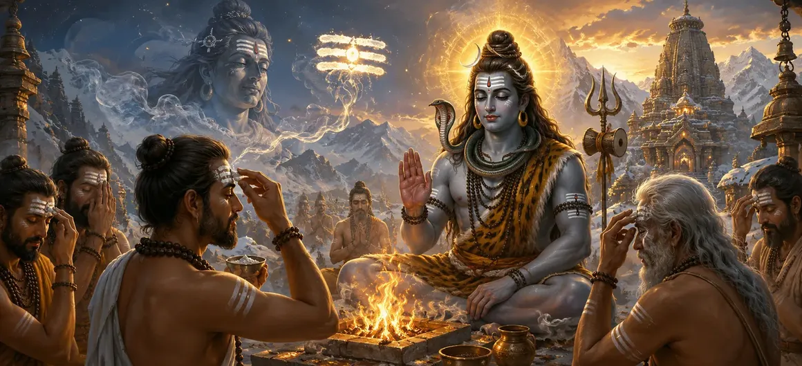

The Glory of Sacred Ash
The twenty-eighth chapter of the Vayaviya Samhita reveals the profound spiritual significance and purifying power of Bhasma.
Sage Vayu explains how Sacred Ash acts as the ultimate cleanser of karmic impurities and a symbol of supreme divine truth.
This chapter extols the holy practice of applying Vibhuti to awaken spiritual wisdom and invoke Lord Shiva's grace.
Chapter 28 Highlights
Supreme Purity
Explores how Bhasma purifies body, mind, and soul from all sins.
Karmic Dissolution
Shows how sacred ash burns away worldly illusions and attachments.
Vibhuti Application
Details the sacred rites and mantras for applying ash on the body.
Shiva's Essence
Links Bhasma directly to the eternal, unmanifest nature of Lord Shiva.
Spiritual Armor
Acts as a protective shield against negative energies and fear.
Narrative Flow
Leads smoothly into Chapter 29 covering The Analysis of Word and Meaning.
Core Topics in This Chapter
The Divine Origin and Nature of Bhasma
Sage Vayu explains that Bhasma originates from the sacred fire sacrifices and represents the essence of all matter returning to its source.
It embodies the transcendental truth that all physical forms ultimately dissolve into divine consciousness.
The Ultimate Purifying Potency of Sacred Ash
Bhasma possesses the unique spiritual power to cleanse accumulated sins and dispel mental darkness.
Wearing it reminds the seeker of the ephemeral nature of worldly attachments and the permanence of the soul.
Sacred Rites and Methods of Applying Vibhuti
The text prescribes specific parts of the body—such as the forehead, chest, arms, and neck—where Vibhuti should be smeared.
Proper application transforms the physical body into a living temple of Lord Shiva.
Alignment with Mantras and Devotion
Applying sacred ash must be accompanied by powerful Vedic and Puranic mantras invoking Lord Shiva's grace.
This conscious alignment awakens deep spiritual devotion and inner harmony.
Philosophical Significance of Ash in Creation
Bhasma teaches detachment, reminding devotees that fire ultimately reduces everything to pure, indestructible ash.
It is the supreme ornament worn by Lord Shiva Himself, signifying His mastery over death and destruction.
Conclusion of the Bhasma Mahima Episode
Chapter 28 concludes with high praise for those who regularly wear Vibhuti with faith and devotion.
Sage Vayu assures the sages that such devotees attain supreme spiritual liberation.
Transition to Chapter 29
Following this discourse on sacred ash, Rishi Vayu prepares to narrate Chapter 29, 'The Analysis of Word and Meaning'.
The next chapter explores deeper linguistic and metaphysical truths underlying sacred knowledge.
Key Teachings of Chapter 28
Sacred Cleansing
Bhasma removes physical and spiritual blemishes effortlessly.
Fire of Wisdom
Symbolizes the blazing fire of knowledge burning ignorance.
Shiva's Mark
Wearing ash aligns the soul with Lord Shiva's divine vibration.
Divine Protection
Guards the practitioner against unrighteousness and fear.
Detachment
Reminds devotees of the transient nature of worldly existence.
Next Steps
Prepares the intellect for linguistic analysis in Chapter 29.
Spiritual Reflection
Applying sacred ash is a daily reminder that ego and worldly illusions must be surrendered in the fire of divine awareness to reveal our true immortal nature.
Living the Message of Chapter 28
Incorporate the mindful application of Vibhuti into your daily spiritual routine.
Cultivate inner purity and let go of trivial egoistic attachments.
Remember Lord Shiva's omnipresence in every breath and action.
Key Spiritual Concepts
The glorious spiritual significance of Sacred Ash.
The sacred rules for applying holy ash on the body.
The sin-destroying potency of consecrated Bhasma.
Spiritual practice leading to union with Lord Shiva.
The illuminating fire of supreme spiritual wisdom.
The prelude to Word and Meaning analysis in Chapter 29.
Chapter Summary
Vayaviya Samhita Chapter 28 presents The Glory of Sacred Ash. Highlighting Bhasma's divine origin, purifying potency, application rites, and philosophical detachment, this chapter extols the profound spiritual value of Vibhuti. It paves the way for Chapter 29, 'The Analysis of Word and Meaning'.
Frequently Asked Questions
1. What is the primary subject of Vayaviya Samhita Chapter 28?
Chapter 28 explores the profound spiritual glory, purifying potency, and sacred application of Bhasma in Lord Shiva's tradition.
2. Why is Bhasma considered so sacred in the Shiva Purana?
Bhasma represents the ultimate reality of creation, the burning away of karmic impurities, and the eternal presence of Lord Shiva.
3. How should devotees apply Sacred Ash according to the scriptures?
Devotees apply Bhasma with sacred mantras across key parts of the body to invite spiritual protection, mental clarity, and divine grace.
4. Who narrates this sacred chapter in the Vayaviya Samhita?
Sage Vayu expounds these divine truths regarding Bhasma to the assembled sages in the Vayaviya Samhita.
5. What is the next chapter for navigation after Chapter 28?
The next chapter for navigation is titled 'The Analysis of Word and Meaning'.
“When all illusions are burned in the fire of wisdom, what remains is the pure, eternal ash of divine truth.”
Continue Through Vayaviya Samhita
Chapter 28 concludes The Glory of Sacred Ash. Continue to The Analysis of Word and Meaning.